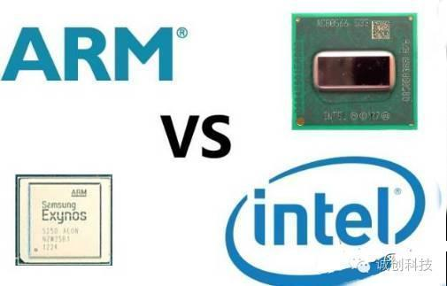

i3dfree科普系列 | 深入了解CPU两大架构ARM与X86
以下文章来源于诚创科技，作者i3dfree
专注于制造业相关领域资讯和干货的分享。
★
随便逮住一个人问他知不知道CPU，我想他的答案一定会是肯定的，但是如果你再问他知道ARM和X86架构么？这两者的区别又是什么？绝大多数的人肯定是一脸懵逼。今天小编就带你深入了解CPU的这两大架构：ARM和X86。以后出去装X就靠它了！
重温下CPU是什么鬼
中央处理单元（CPU）主要由运算器、控制器、寄存器三部分组成，从字面意思看运算器就是起着运算的作用，控制器就是负责发出CPU每条指令所需要的信息，寄存器就是保存运算或者指令的一些临时文件，这样可以保证更高的速度。
CPU有着处理指令、执行操作、控制时间、处理数据四大作用，打个比喻来说，CPU就像我们的大脑，帮我们完成各种各样的生理活动。因此如果没有CPU，那么电脑就是一堆废物，无法工作。移动设备其实很复杂，这些CPU需要执行数以百万计的指示，才能使它向我们期待的方向运行，而CPU的速度和功率效率是至关重要的。速度影响用户体验，而效率影响电池寿命。最完美的移动设备是高性能和低功耗相结合。

要了解X86和ARM，就得先了解复杂指令集（CISC）和精简指令集（RISC） 从CPU发明到现在，有非常多种架构，从我们熟悉的X86，ARM，到不太熟悉的MIPS，IA64，它们之间的差距都非常大。但是如果从最基本的逻辑角度来分类的话，它们可以被分为两大类，即所谓的“复杂指令集”与“精简指令集”系统，也就是经常看到的“CISC”与“RISC”。 Intel和ARM处理器的第一个区别是，前者使用复杂指令集（CISC），而后者使用精简指令集（RISC）。属于这两种类中的各种架构之间最大的区别，在于它们的设计者考虑问题方式的不同。
我们可以继续举个例子，比如说我们要命令一个人吃饭，那么我们应该怎么命令呢？我们可以直接对他下达“吃饭”的命令，也可以命令他“先拿勺子，然后舀起一勺饭，然后张嘴，然后送到嘴里，最后咽下去”。从这里可以看到，对于命令别人做事这样一件事情，不同的人有不同的理解，有人认为，如果我首先给接受命令的人以足够的训练，让他掌握各种复杂技能（即在硬件中实现对应的复杂功能），那么以后就可以用非常简单的命令让他去做很复杂的事情——比如只要说一句“吃饭”，他就会吃饭。但是也有人认为这样会让事情变的太复杂，毕竟接受命令的人要做的事情很复杂，如果你这时候想让他吃菜怎么办？难道继续训练他吃菜的方法？我们为什么不可以把事情分为许多非常基本的步骤，这样只需要接受命令的人懂得很少的基本技能，就可以完成同样的工作，无非是下达命令的人稍微累一点——比如现在我要他吃菜，只需要把刚刚吃饭命令里的“舀起一勺饭”改成“舀起一勺菜”，问题就解决了，多么简单。这就是“复杂指令集”和“精简指令集”的逻辑区别。
从几个方面比较ARM与X86架构Intel和ARM的处理器除了最本质的复杂指令集（CISC）和精简指令集（RISC）的区别之外，下面我们再从以下几个方面对比下ARM和X86架构。一、制造工艺ARM和Intel处理器的一大区别是ARM从来只是设计低功耗处理器，Intel的强项是设计超高性能的台式机和服务器处理器。
一直以来，Intel都是台式机的服务器行业的老大。然而进入移动行业时，Intel依然使用和台式机同样的复杂指令集架构，试图将其硬塞入给移动设备使用的体积较小的处理器中。但是Intel i7处理器平均发热率为45瓦。基于ARM的片上系统（其中包括图形处理器）的发热率最大瞬间峰值大约是3瓦，约为Intel i7处理器的1/15。其最新的Atom系列处理器采用了跟ARM处理器类似的温度控制设计，为此Intel必须使用最新的22纳米制造工艺。一般而言，制造工艺的纳米数越小，能量的使用效率越高。ARM处理器使用更低的制造工艺，拥有类似的温控效果。比如，高通晓龙805处理器使用28纳米制造工艺。
二、64位计算对于64位计算，ARM和Intel也有一些显著区别。Intel并没有开发64位版本的x86指令集。64位的指令集名为x86-64（有时简称为x64），实际上是AMD设计开发的。Intel想做64位计算，它知道如果从自己的32位x86架构进化出64位架构，新架构效率会很低，于是它搞了一个新64位处理器项目名为IA64。由此制造出了Itanium系列处理器。
同时AMD知道自己造不出能与IA64兼容的处理器，于是它把x86扩展一下，加入了64位寻址和64位寄存器。最终出来的架构，就是 AMD64，成为了64位版本的x86处理器的标准。IA64项目并不算得上成功，现如今基本被放弃了。Intel最终采用了AMD64。Intel当前给出的移动方案，是采用了AMD开发的64位指令集（有些许差别）的64位处理器。
而ARM在看到移动设备对64位计算的需求后，于2011年发布了ARMv8 64位架构，这是为了下一代ARM指令集架构工作若干年后的结晶。为了基于原有的原则和指令集，开发一个简明的64位架构，ARMv8使用了两种执行模式，AArch32和AArch64。顾名思义，一个运行32位代码，一个运行64位代码。ARM设计的巧妙之处，是处理器在运行中可以无缝地在两种模式间切换。这意味着64位指令的解码器是全新设计的，不用兼顾32位指令，而处理器依然可以向后兼容。
三、异构计算ARM的big.LITTLE架构是一项Intel一时无法复制的创新。在big.LITTLE架构里，处理器可以是不同类型的。传统的双核或者四核处理器中包含同样的2个核或者4个核。一个双核Atom处理器中有两个一模一样的核，提供一样的性能，拥有相同的功耗。ARM通过big.LITTLE向移动设备推出了异构计算。这意味着处理器中的核可以有不同的性能和功耗。当设备正常运行时，使用低功耗核，而当你运行一款复杂的游戏时，使用的是高性能的核。
这是什么做到的呢？设计处理器的时候，要考虑大量的技术设计的采用与否，这些技术设计决定了处理器的性能以及功耗。在一条指令被解码并准备执行时，Intel和ARM的处理器都使用流水线，就是说解码的过程是并行的。
为了更快地执行指令，这些流水线可以被设计成允许指令们不按照程序的顺序被执行（乱序执行）。一些巧妙的逻辑结构可以判断下一条指令是否依赖于当前的指令执行的结果。Intel和ARM都提供乱序执行逻辑结构，可想而知，这种结构十分的复杂，复杂意味着更多的功耗。
Intel处理器由设计者们选择是否加入乱序逻辑结构。异构计算则没有这方便的问题。ARM Cortex-A53采用顺序执行，因此功耗低一些。而ARM Cortex-A57使用乱序执行，所以更快但更耗电。采用big.LITTLE架构的处理器可以同时拥有Cortex-A53和Cortex-A57核，根据具体的需要决定如何使用这些核。在后台同步邮件的时候，不需要高速的乱序执行，仅在玩复杂游戏的时候需要。在合适的时间使用合适的核。
此外，ARM具有其与X86架构电脑不可对比的优势，该优势就是：功耗。其实它们的功耗主要是由这几点决定的。首先，功耗和工艺制程相关。ARM的处理器不管是哪家主要是靠台积电等专业制造商生产的，而Intel是由自己的工厂制造的。一般来说后者比前者的工艺领先一代，也就是2-3年。如果同样的设计，造出来的处理器应该是Intel的更紧凑，比如一个是22纳米，一个是28纳米，同样功能肯定是22纳米的耗电更少。
那为什么反而ARM的比X86耗电少得多呢。这就和另外一个因素相关了，那就是设计。
设计又分为前端和后端设计端设计体现了处理器的构架，精简指令集和复杂指令集的区别是通过前端设计体现的。后端设计处理电压，时钟等问题，是耗电的直接因素。先说下后端怎么影响耗电的。我们都学过，晶体管耗电主要两个原因，一个是动态功耗，一个是漏电功耗。动态功耗是指晶体管在输入电压切换的时候产生的耗电，而所有的逻辑功能的0/1切换，归根结底都是时钟信号的切换。如果时钟信号保持不变，那么这部分的功耗就为0。这就是所谓的门控时钟（Clock Gating）。而漏电功耗可以通过关掉某个模块的电源来控制（Power Gating）。当然，其中任何一项都会使得时钟和电源所控制的模块无法工作。他们的区别在于，门控时钟的恢复时间较短，而电源控制的时间较长。此外，如果条单条指令使用多个模块的功能，在恢复功能的时候，并不是最慢的那个模块的时间，而可能是几个模块时间相加，因为这牵涉到一个上电次序（Power Sequence）的问题，也就是恢复工作时候模块间是有先后次序的，不遵照这个次序，就无法恢复。而遵照这个次序，就会使得总恢复时间很长。所以在后端这块，可以得到一个结论，为了省电，可以关闭一些暂时不会用到的处理器模块。但是也不能轻易的关闭，否则一旦需要，恢复的话会让完成某个指令的时间会很长，总体性能显然降低。此外，子模块的门控时钟和电源开关通常是设计电路时就决定的，对于操作系统是透明的，无法通过软件来优化。
再来看前端。ARM的处理器有个特点，就是乱序执行能力不如X86。换句话说，就是用户在使用电脑的时候，他的操作是随机的，无法预测的，造成了指令也无法预测。X86为了增强对这种情况下的处理能力，加强了乱序指令的执行。此外，X86还增强了单核的多线程能力。这样做的缺点就是，无法很有效的关闭和恢复处理器子模块，因为一旦关闭，恢复起来就很慢，从而造成低性能。为了保持高性能，就不得不让大部分的模块都保持开启，并且时钟也保持切换。这样做的直接后果就是耗电高。而ARM的指令强在确定次序的执行，并且依靠多核而不是单核多线程来执行。这样容易保持子模块和时钟信号的关闭，显然就更省电。
此外，在操作系统这个级别，个人电脑上通常会开很多线程，而移动平台通常会做优化，只保持必要的线程。这样使得耗电差距进一步加大。当然，如果X86用在移动平台，肯定也会因为线程少而省电。凌动系列（ATOM）专门为这些特性做了优化，在一定程度上降低乱序执行和多线程的处理能力，从而达到省电。现在移动处理器都是片上系统（SoC）架构，也就是说，处理器之外，图形，视频，音频，网络等功能都在一个芯片里。这些模块的打开与关闭就容易预测的多，并且可以通过软件来控制。这样，整体功耗就更加取决于软件和制造工艺而不是处理机架构。在这点上，X86的处理器占优势，因为Intel的工艺有很大优势，而软件优化只要去做肯定就可以做到。
ARM和X86现在发展如何？关于X86架构和ARM架构这两者谁将统一市场的争执一直都有，但是也有人说这两者根本不具备可比性，X86无法做到ARM的功耗，而ARM也无法做到X86的性能。现在ARM架构已经具备了进入服务器芯片的能力，众多芯片研发企业纷纷采用ARM架构研发服务器芯片无疑将促进其繁荣， 2015年一款采用ARM架构的Windows 10平板现身，这也是目前曝光的全球首款非X86架构、运行Windows系统的平板产品。
同时，经过数年的努力，2016年AMD终于推出了首个基于ARM架构的处理器——Opteron A1100。AMD希望能够凭借这一处理器挑战Intel在数据中心服务器市场的霸主地位。这样看来，Intel在服务器芯片市场将会逐渐失去霸主地位，而且，Intel已然错过了移动 CPU 市场，现在它正试图跳进千万亿的物联网领域，具体表现如何，看时间的考验吧。
i3dfree国内最大的3D模型服务平台，搜索模型、找模型就在i3dfree.com 全部免费哦